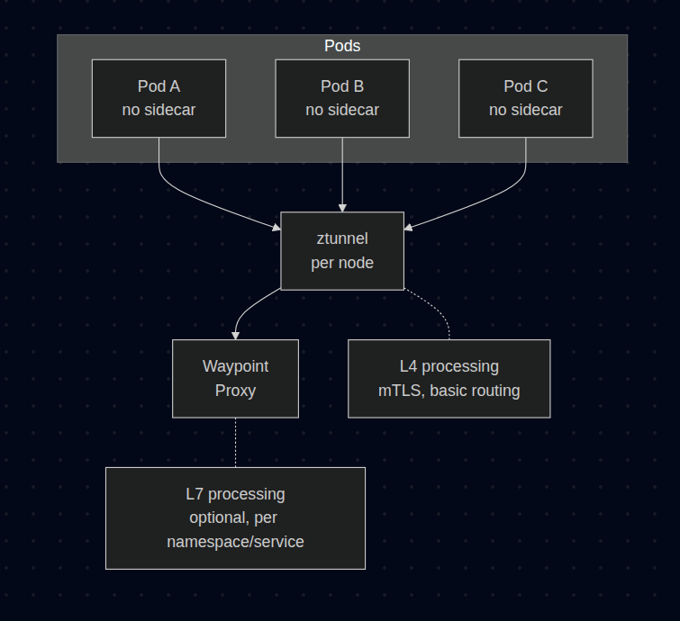
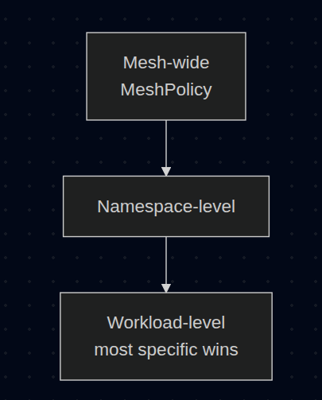
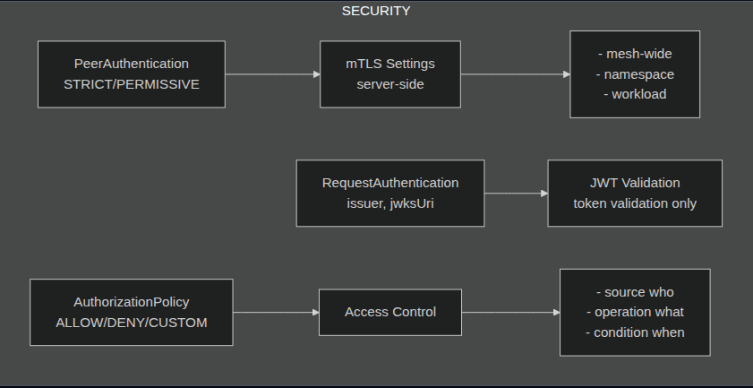
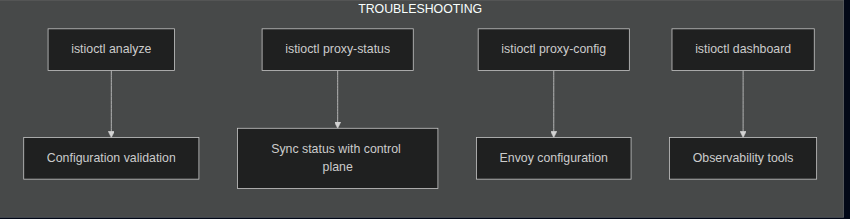

Istio Certified Associate (ICA) Overview
1. Service Mesh Fundamentals
Understanding the "Why" before the "How."
- What is a Service Mesh: A dedicated infrastructure layer for managing service-to-service communication in microservices architectures.
- The Need for Istio: Solving challenges like traffic management, security, and observability without modifying application code.
- Sidecar vs. Ambient Mode: Understanding the two deployment models — Sidecar (Envoy proxy per pod) vs. Ambient (ztunnel + waypoint proxies).
2. Istio Core Architecture
The backbone of the service mesh.
- Control Plane (istiod): The brain of Istio — handles configuration, certificate management, and service discovery.
- Data Plane: Envoy proxies that intercept and manage all network traffic between services.
- Key Components: All consolidated into
istiod— handles traffic management (formerly Pilot), security/mTLS (formerly Citadel), and configuration validation (formerly Galley).
Example of Traffic Flow:

3. Installation, Upgrade & Configuration (20%)
Getting Istio up and running.
- Installation Methods: Using
istioctl installor Helm charts. - Installation Profiles: Understanding
default,demo,minimal, andambientprofiles. - Customizing Installation: Using IstioOperator resource for advanced configurations.
- Upgrade Strategies: Canary upgrades (run two control planes) vs. In-place upgrades.
4. Traffic Management (35%)
The largest exam domain — master this well.
- Ingress & Egress: Configuring Gateway resources for north-south traffic.
- VirtualService: Defining routing rules (host-based, header-based, URI matching).
- DestinationRule: Configuring load balancing policies, connection pools, and outlier detection.
- Traffic Shifting: Canary deployments and A/B testing with weighted routing.
- Resilience Features: Circuit breaking, retries, timeouts, and failover.
- Fault Injection: Testing resilience by injecting delays or HTTP errors.
- ServiceEntry: Connecting in-mesh workloads to external services.
5. Securing Workloads (25%)
Zero-trust security model.
- Mutual TLS (mTLS): Automatic encryption between services using PeerAuthentication.
- Authorization Policies: Fine-grained access control (allow/deny based on source, operation, conditions).
- RequestAuthentication: Validating JWT tokens at the mesh edge.
- Securing Edge Traffic: Configuring TLS termination and passthrough at the Ingress Gateway.
6. Troubleshooting (20%)
Debugging when things go wrong.
- Configuration Issues: Using
istioctl analyzeto detect misconfigurations. - Control Plane Debugging: Checking istiod logs, sync status, and xDS configuration.
- Data Plane Debugging: Using
istioctl proxy-status,proxy-config, and Envoy admin interface. - Common Issues: 503 errors, mTLS conflicts, missing sidecars, and routing mismatches.
Sections That Need to Be Understood
1. Sidecar vs. Ambient Mode
Domain: Installation, Upgrade & Configuration
Istio offers two data plane modes. Understanding the differences is crucial for the exam.
Sidecar Mode (Traditional):

- Every pod gets its own Envoy proxy injected as a sidecar container.
- Pros: Full L7 features, mature and battle-tested.
- Cons: High resource overhead (memory/CPU per pod), increased latency.
Ambient Mode (Sidecar-less):

- ztunnel: Node-level proxy handling L4 (TCP, mTLS).
- Waypoint Proxy: Optional L7 proxy deployed per namespace or service.
- Pros: Lower resource usage, simpler operations, no sidecar injection needed.
- Cons: Newer, some L7 features require waypoint deployment.
| Feature | Sidecar Mode | Ambient Mode |
|---|---|---|
| Resource overhead | High (per pod) | Low (per node) |
| L4 mTLS | Support | Support (ztunnel) |
| L7 features | Support (always) | Support (needs waypoint) |
| Injection required | Yes | No |
| Maturity | Stable | Newer (GA in 1.24+) |
References:
2. VirtualService & DestinationRule Relationship
Domain: Traffic Management
These two resources work together and are the most important concepts for the exam.
Resource Relationship:

VirtualService — Defines WHERE traffic goes:
apiVersion: networking.istio.io/v1beta1
kind: VirtualService
metadata:
name: reviews-routing
spec:
hosts:
- reviews # Target service
gateways:
- mesh # For internal mesh traffic
- bookinfo-gateway # For external traffic
http:
- match:
- headers:
end-user:
exact: jason # Header-based routing
route:
- destination:
host: reviews
subset: v2 # Route to v2 for user "jason"
- route:
- destination:
host: reviews
subset: v1
weight: 80 # 80% to v1
- destination:
host: reviews
subset: v3
weight: 20 # 20% to v3
DestinationRule — Defines HOW traffic is handled:
apiVersion: networking.istio.io/v1beta1
kind: DestinationRule
metadata:
name: reviews-destination
spec:
host: reviews # Must match VirtualService destination
trafficPolicy:
connectionPool:
tcp:
maxConnections: 100
http:
h2UpgradePolicy: UPGRADE
http1MaxPendingRequests: 100
loadBalancer:
simple: ROUND_ROBIN # ROUND_ROBIN, LEAST_CONN, RANDOM, PASSTHROUGH
outlierDetection:
consecutive5xxErrors: 5
interval: 10s
baseEjectionTime: 30s
subsets:
- name: v1
labels:
version: v1 # Pod selector
- name: v2
labels:
version: v2
trafficPolicy: # Subset-specific policy
loadBalancer:
simple: LEAST_CONN
- name: v3
labels:
version: v3
Summary:
# DestinationRule define subset
subsets:
- name: v1
labels:
version: v1
# VirtualService route to that subset
route:
- destination:
host: my-svc
subset: v1 # refer to DR
VirtualService and DestinationRule are namespace-scoped. But can be reference cross-namespace by FQDN my-svc.other-namespace.svc.cluster.local in host field!
Key Point: VirtualService references subsets defined in DestinationRule. Always create DestinationRule before or together with VirtualService.
References:
3. Gateway Configuration
Domain: Traffic Management
Gateway defines the entry/exit points for traffic entering or leaving the mesh.
Ingress Gateway (North-South Traffic IN):
apiVersion: networking.istio.io/v1beta1
kind: Gateway
metadata:
name: bookinfo-gateway
spec:
selector:
istio: ingressgateway # Use Istio's default ingress gateway
servers:
- port:
number: 80
name: http
protocol: HTTP
hosts:
- "bookinfo.example.com"
- port:
number: 443
name: https
protocol: HTTPS
hosts:
- "bookinfo.example.com"
tls:
mode: SIMPLE # TLS termination
credentialName: bookinfo-cert # K8s secret with TLS cert
TLS Modes:
| Mode | Description | Use Case |
|---|---|---|
SIMPLE |
TLS termination at gateway | Standard HTTPS |
MUTUAL |
mTLS - client cert required | High security |
PASSTHROUGH |
TLS passed to backend | Backend handles TLS |
ISTIO_MUTUAL |
Istio mTLS | Internal mesh traffic |
Connect Gateway to VirtualService:
apiVersion: networking.istio.io/v1beta1
kind: VirtualService
metadata:
name: bookinfo-vs
spec:
hosts:
- "bookinfo.example.com"
gateways:
- bookinfo-gateway # Reference the Gateway
http:
- route:
- destination:
host: productpage
port:
number: 9080
Small reminder for you and for me, if you have been learning in Cilium or K8S modern technical Gateway API. You will notice and ask if they are the same?
In fact, they are the same for concept, they are all config, they need a real proxy (Envoy/Cilium/Nginx) behind to handle traffic. Here is a little comparison:
| Component | K8s Gateway API | Istio Gateway |
|---|---|---|
| Listener | Gateway | Gateway (included host, TLS) |
| Routing | HTTPRoute | VirtualService |
| Selector | gatewayClassName |
selector: istio: ingressgateway |
Egress Gateway (North-South Traffic OUT): Just need to memorize syntax, I will have a section explain this below with ServiceEntry and VirtualService with Egress Gateway together to see how it works!
apiVersion: networking.istio.io/v1beta1
kind: Gateway
metadata:
name: istio-egressgateway
spec:
selector:
istio: egressgateway
servers:
- port:
number: 443
name: tls
protocol: TLS
hosts:
- "external-api.example.com"
tls:
mode: PASSTHROUGH
References:
4. Traffic Shifting & Canary Deployments
Domain: Traffic Management
Gradually shift traffic between service versions for safe deployments.
Weighted Routing (Canary):
apiVersion: networking.istio.io/v1beta1
kind: VirtualService
metadata:
name: reviews
spec:
hosts:
- reviews
http:
- route:
- destination:
host: reviews
subset: v1
weight: 90 # 90% to stable version
- destination:
host: reviews
subset: v2
weight: 10 # 10% to canary version
Header-Based Routing (A/B Testing):
apiVersion: networking.istio.io/v1beta1
kind: VirtualService
metadata:
name: reviews
spec:
hosts:
- reviews
http:
- match:
- headers:
x-canary:
exact: "true" # Route if header present
route:
- destination:
host: reviews
subset: v2
- route:
- destination:
host: reviews
subset: v1 # Default route
Traffic Mirroring (Shadow Traffic):
apiVersion: networking.istio.io/v1beta1
kind: VirtualService
metadata:
name: reviews
spec:
hosts:
- reviews
http:
- route:
- destination:
host: reviews
subset: v1
mirror:
host: reviews
subset: v2 # Mirror traffic to v2
mirrorPercentage:
value: 100.0 # Mirror 100% of traffic
Key Point: Mirrored traffic is "fire and forget" — responses from the mirror are discarded.
References:
5. mTLS & PeerAuthentication
Domain: Securing Workloads
Istio can automatically encrypt all service-to-service traffic using mutual TLS.
PeerAuthentication Modes:
| Mode | Description |
|---|---|
STRICT |
Only mTLS traffic allowed (reject plaintext) |
PERMISSIVE |
Accept both mTLS and plaintext (migration mode) |
DISABLE |
Disable mTLS |
UNSET |
Inherit from parent scope |
Scope Hierarchy:

Mesh-wide STRICT mTLS:
apiVersion: security.istio.io/v1beta1
kind: PeerAuthentication
metadata:
name: default
namespace: istio-system # istio-system = mesh-wide
spec:
mtls:
mode: STRICT
Namespace-level mTLS:
apiVersion: security.istio.io/v1beta1
kind: PeerAuthentication
metadata:
name: default
namespace: production # Applies to production namespace
spec:
mtls:
mode: STRICT
Workload-level mTLS: The guard decides to accept or reject traffic. With STRICT, it said: I only accept TLS, plaintext will get rejected! Not related to anything client-side!
apiVersion: security.istio.io/v1beta1
kind: PeerAuthentication
metadata:
name: reviews-mtls
namespace: production
spec:
selector:
matchLabels:
app: reviews # Only applies to reviews service
mtls:
mode: STRICT # All port requires mTLS
portLevelMtls:
8080:
mode: PERMISSIVE # Port-specific override that allow both mTLS and plaintext
DestinationRule TLS Settings (Client-side):
apiVersion: networking.istio.io/v1beta1
kind: DestinationRule
metadata:
name: reviews-mtls
spec:
host: reviews
trafficPolicy:
tls:
mode: ISTIO_MUTUAL # Use Istio's mTLS
Key Point: PeerAuthentication = server-side (what traffic to accept). DestinationRule tls = client-side (how to connect).
References:
6. AuthorizationPolicy
Domain: Securing Workloads
Fine-grained access control for workloads.
Policy Actions:
| Action | Description |
|---|---|
ALLOW |
Allow matching requests (default deny all others) |
DENY |
Deny matching requests |
CUSTOM |
Delegate to external authorizer |
AUDIT |
Audit matching requests (logging only) |
Deny-All Policy (Zero Trust Baseline):
apiVersion: security.istio.io/v1beta1
kind: AuthorizationPolicy
metadata:
name: deny-all
namespace: production
spec:
{} # Empty spec = deny all
Allow Specific Traffic:
apiVersion: security.istio.io/v1beta1
kind: AuthorizationPolicy
metadata:
name: allow-productpage
namespace: production
spec:
selector:
matchLabels:
app: productpage
action: ALLOW
rules:
- from:
- source:
principals: ["cluster.local/ns/production/sa/frontend"]
to:
- operation:
methods: ["GET"]
paths: ["/api/*"]
when:
- key: request.headers[x-token]
values: ["valid-token"]
You will be thinking WTF is this? So I will start explain it now xD
principals is SPIFFE ID (A SPIFFE ID is a string that uniquely and specifically identifies a workload)
cluster.local/ns/production/sa/frontend
│ │ │ │ │
│ │ │ │ └── ServiceAccount name
│ │ │ └── "sa" = service account
│ │ └── Namespace name
│ └── "ns" = namespace
└── Trust domain (default cluster.local)
Read this rule by this following steps: Only allow request into pod app: productpage when
- from: client use serviceAccount
frontendin namespaceproduction - to: Method
GET, path/api/* - when: Header
x-token: valid-token
Those conditions are AND, if one not matching, then it will be denied.
Why use SPIFFE ID: because mTLS cert of each pod this identity, when traffic arrived, server sidecar extract identity from cert -> match with principals
Check identity of pod:
istioctl proxy-config secret <pod> -o json | grep spiffe
Short forms for exam:
principals: ["cluster.local/ns/production/sa/frontend"] # exact SA
principals: ["cluster.local/ns/production/sa/*"] # any SA in ns
namespaces: ["production"] # simpler, same ns check
Deny Specific Traffic:
apiVersion: security.istio.io/v1beta1
kind: AuthorizationPolicy
metadata:
name: deny-bad-ips
namespace: production
spec:
action: DENY
rules:
- from:
- source:
ipBlocks: ["10.0.0.0/8"] # Deny this
notIpBlocks: ["10.0.1.0/24"] # But except this xD (whitelist)
Policy Evaluation Order:
1. CUSTOM policies (if any)
2. DENY policies (if match → reject)
3. ALLOW policies (if match → allow)
4. No match → depends on whether ALLOW policies exist
- If ALLOW policies exist → deny (allowlist mode)
- If no ALLOW policies → allow (no restriction)
References:
7. RequestAuthentication (JWT Validation)
Domain: Securing Workloads
Validate JWT tokens at the mesh edge. RequestAuthentication validate JWT token
Basic JWT Validation:
apiVersion: security.istio.io/v1beta1
kind: RequestAuthentication
metadata:
name: jwt-auth
namespace: production
spec:
selector:
matchLabels:
app: productpage
jwtRules:
- issuer: "https://auth.example.com" # JWT must have iss claim equal to this!
jwksUri: "https://auth.example.com/.well-known/jwks.json" # Endpoint get public keys to verify signature
audiences: # JWT must have `aud` claim match
- "bookinfo-app"
forwardOriginalToken: true # Forward JWT to upstream
outputPayloadToHeader: x-jwt-payload # Decode payload -> send into header x-jwt-payload
Multiple Issuers:
apiVersion: security.istio.io/v1beta1
kind: RequestAuthentication
metadata:
name: multi-jwt
spec:
jwtRules:
- issuer: "https://accounts.google.com"
jwksUri: "https://www.googleapis.com/oauth2/v3/certs"
- issuer: "https://auth0.example.com/"
jwksUri: "https://auth0.example.com/.well-known/jwks.json"
Combine with AuthorizationPolicy: To enforce JWT, it must be combined with AuthorizationPolicy
# First: Validate JWT
apiVersion: security.istio.io/v1beta1
kind: RequestAuthentication
metadata:
name: jwt-auth
spec:
selector:
matchLabels:
app: productpage
jwtRules:
- issuer: "https://auth.example.com"
jwksUri: "https://auth.example.com/.well-known/jwks.json"
---
# Then: Require valid JWT
apiVersion: security.istio.io/v1beta1
kind: AuthorizationPolicy
metadata:
name: require-jwt
spec:
selector:
matchLabels:
app: productpage
action: ALLOW
rules:
- from:
- source:
requestPrincipals: ["https://auth.example.com/*"] # Must have valid JWT
Exam Note: RequestAuthentication alone doesn't block requests not having JWT
- Have invalid JWT --> 401!
- Do not have JWT --> Still pass! (Istio is 'fail-open' regarding authorization. If no policies exist, traffic is allowed)
Key Point: RequestAuthentication only validates tokens. To require tokens, combine with AuthorizationPolicy.
References:
8. Resilience Features
Domain: Traffic Management
Build fault-tolerant services with Istio's resilience features.
Circuit Breaker (Connection Pool + Outlier Detection):
apiVersion: networking.istio.io/v1beta1
kind: DestinationRule
metadata:
name: reviews-cb
spec:
host: reviews
trafficPolicy:
connectionPool:
tcp:
maxConnections: 100 # Max TCP connections
http:
http1MaxPendingRequests: 100 # Max pending HTTP/1.1 requests
http2MaxRequests: 1000 # Max HTTP/2 requests
maxRequestsPerConnection: 10 # Requests per connection
maxRetries: 3 # Max concurrent retries
outlierDetection:
consecutive5xxErrors: 5 # Eject after 5 consecutive 5xx
interval: 10s # Analysis interval
baseEjectionTime: 30s # Min ejection time
maxEjectionPercent: 50 # Max % of hosts to eject
minHealthPercent: 30 # Min healthy hosts required
Retries:
apiVersion: networking.istio.io/v1beta1
kind: VirtualService
metadata:
name: reviews
spec:
hosts:
- reviews
http:
- route:
- destination:
host: reviews
retries:
attempts: 3 # Max retry attempts
perTryTimeout: 2s # Timeout per attempt
retryOn: "5xx,reset,connect-failure"
retryRemoteLocalities: true # Retry on different locality
Timeouts:
apiVersion: networking.istio.io/v1beta1
kind: VirtualService
metadata:
name: reviews
spec:
hosts:
- reviews
http:
- route:
- destination:
host: reviews
timeout: 10s # Total request timeout
Fault Injection (Testing Resilience):
apiVersion: networking.istio.io/v1beta1
kind: VirtualService
metadata:
name: reviews
spec:
hosts:
- reviews
http:
- fault:
delay:
percentage:
value: 10 # 10% of requests
fixedDelay: 5s # 5 second delay
abort:
percentage:
value: 5 # 5% of requests
httpStatus: 503 # Return 503
route:
- destination:
host: reviews
References:
9. ServiceEntry & WorkloadEntry
Domain: Traffic Management
Connect mesh services to external services or VMs. So it is pod virtualization for non-K8s workload, to apply mTLS, traffic policies like normal. Treated
ServiceEntry — Register External Services:
apiVersion: networking.istio.io/v1beta1
kind: ServiceEntry
metadata:
name: external-api
spec:
hosts:
- api.external.com
location: MESH_EXTERNAL # Outside the mesh
ports:
- number: 443
name: https
protocol: TLS
resolution: DNS # DNS, STATIC, or NONE
ServiceEntry with Egress Gateway:
apiVersion: networking.istio.io/v1beta1
kind: ServiceEntry
metadata:
name: external-api
spec:
hosts:
- api.external.com
ports:
- number: 443
name: tls
protocol: TLS
resolution: DNS
location: MESH_EXTERNAL
---
apiVersion: networking.istio.io/v1beta1
kind: VirtualService
metadata:
name: external-api-route
spec:
hosts:
- api.external.com
gateways:
- mesh
- istio-egressgateway
tls:
- match:
- gateways:
- mesh
port: 443
sniHosts:
- api.external.com
route:
- destination:
host: istio-egressgateway.istio-system.svc.cluster.local
port:
number: 443
WorkloadEntry — Add VMs to Mesh:
apiVersion: networking.istio.io/v1beta1
kind: WorkloadEntry
metadata:
name: vm-workload
spec:
address: 192.168.1.100 # VM IP address
labels:
app: legacy-app
version: v1
serviceAccount: legacy-app-sa
---
apiVersion: networking.istio.io/v1beta1
kind: ServiceEntry
metadata:
name: legacy-app
spec:
hosts:
- legacy-app.example.com
ports:
- number: 8080
name: http
protocol: HTTP
location: MESH_INTERNAL
resolution: STATIC
workloadSelector:
labels:
app: legacy-app
References:
10. Troubleshooting Commands
Domain: Troubleshooting
Essential istioctl commands for the exam.
Installation & Verification:
# Install Istio
istioctl install --set profile=demo -y
# Verify installation
istioctl verify-install
# Check Istio version
istioctl version
# View installation profile
istioctl profile dump demo
istioctl profile diff default demo
Analyze Configuration:
# Analyze entire mesh for issues
istioctl analyze
# Analyze specific namespace
istioctl analyze -n production
# Analyze specific file
istioctl analyze my-config.yaml
# Common issues detected:
# - IST0101: Referenced gateway not found
# - IST0102: Referenced host not found
# - IST0106: Schema validation error
Proxy Status & Sync:
# Check proxy sync status with control plane
istioctl proxy-status
# Output columns: NAME, CDS, LDS, EDS, RDS, ECDS, ISTIOD
# Status meanings:
# SYNCED - Config synced with control plane
# NOT SENT - Config not sent (usually no listeners)
# STALE - Config outdated
# Debug specific proxy
istioctl proxy-status <pod-name>.<namespace>
Proxy Configuration:
# View proxy configuration summary
istioctl proxy-config all <pod-name> -n <namespace>
# View specific config types
istioctl proxy-config routes <pod-name> -n <namespace>
istioctl proxy-config clusters <pod-name> -n <namespace>
istioctl proxy-config listeners <pod-name> -n <namespace>
istioctl proxy-config endpoints <pod-name> -n <namespace>
istioctl proxy-config secrets <pod-name> -n <namespace>
# Output as JSON for detailed analysis
istioctl proxy-config routes <pod-name> -o json
# Filter by service
istioctl proxy-config clusters <pod-name> --fqdn reviews.default.svc.cluster.local
Debug & Logging:
# Enable debug logging on proxy
istioctl proxy-config log <pod-name> --level debug
# Enable specific component logging
istioctl proxy-config log <pod-name> --level connection:debug,http:debug
# View Envoy access logs (in pod)
kubectl logs <pod-name> -c istio-proxy -f
# Describe proxy (detailed info)
istioctl experimental describe pod <pod-name>
Dashboard & Visualization:
# Open Kiali dashboard
istioctl dashboard kiali
# Open Grafana
istioctl dashboard grafana
# Open Jaeger (tracing)
istioctl dashboard jaeger
# Open Envoy admin interface
istioctl dashboard envoy <pod-name>
# Open Prometheus
istioctl dashboard prometheus
# Open istiod control plane
istioctl dashboard controlz <istiod-pod>
Injection & Labeling:
# Check if namespace has auto-injection enabled
kubectl get namespace -L istio-injection
# Enable auto-injection
kubectl label namespace <ns> istio-injection=enabled
# Disable auto-injection
kubectl label namespace <ns> istio-injection-
# Manual injection
istioctl kube-inject -f deployment.yaml | kubectl apply -f -
# Check injection status
istioctl experimental check-inject -n <namespace>
Common Troubleshooting Scenarios:
| Symptom | Command | What to Check |
|---|---|---|
| 503 errors | istioctl proxy-config clusters |
Cluster health, endpoints |
| Routing not working | istioctl proxy-config routes |
VirtualService applied correctly |
| Config not applied | istioctl analyze |
Configuration errors |
| Sidecar not injected | kubectl get pod -o yaml |
Injection labels |
References:
11. Installation & Upgrade
Domain: Installation, Upgrade & Configuration
Installation Profiles:
| Profile | Use Case | Components |
|---|---|---|
default |
Production | istiod, ingress gateway |
demo |
Learning/Testing | All components, high tracing |
minimal |
Control plane only | istiod only |
ambient |
Ambient mode | ztunnel, CNI |
empty |
Custom builds | Nothing (start from scratch) |
# List available profiles
istioctl profile list
# Show profile configuration
istioctl profile dump demo
# Compare profiles
istioctl profile diff default demo
Installation Methods:
# Method 1: istioctl (recommended)
istioctl install --set profile=demo -y
# Method 2: IstioOperator manifest
istioctl install -f my-istio-config.yaml
# Method 3: Helm
helm repo add istio https://istio-release.storage.googleapis.com/charts
helm install istio-base istio/base -n istio-system --create-namespace
helm install istiod istio/istiod -n istio-system
helm install istio-ingress istio/gateway -n istio-ingress --create-namespace
IstioOperator Custom Configuration:
apiVersion: install.istio.io/v1alpha1
kind: IstioOperator
metadata:
name: istio-control-plane
spec:
profile: default
meshConfig:
accessLogFile: /dev/stdout # Enable access logs
enableTracing: true
defaultConfig:
tracing:
sampling: 100.0 # 100% trace sampling
components:
ingressGateways:
- name: istio-ingressgateway
enabled: true
k8s:
service:
type: LoadBalancer
resources:
requests:
cpu: 100m
memory: 128Mi
egressGateways:
- name: istio-egressgateway
enabled: true
values:
global:
proxy:
resources:
requests:
cpu: 50m
memory: 64Mi
Upgrade Strategies:
In-Place Upgrade:
# Download new version
curl -L https://istio.io/downloadIstio | ISTIO_VERSION=1.22.0 sh -
# Upgrade
istioctl upgrade --set profile=default
# Restart workloads to get new sidecar
kubectl rollout restart deployment -n <namespace>
Canary Upgrade (Recommended for Production):
# Install new control plane with revision
istioctl install --set revision=1-22-0 --set profile=default
# Label namespace to use new revision
kubectl label namespace production istio.io/rev=1-22-0 --overwrite
# Restart workloads
kubectl rollout restart deployment -n production
# After validation, remove old control plane
istioctl uninstall --revision 1-21-0
References:
12. What is WorkloadGroup?
WorkloadGroup = Template to create WorkloadEntry, like Deployment for Pod xD
apiVersion: networking.istio.io/v1beta1
kind: WorkloadGroup
metadata:
name: legacy-app-group
spec:
metadata:
labels:
app: legacy-app
template:
serviceAccount: legacy-sa
ports:
http: 8080
Use case: If multiple VMs share the same role (such as auto-scaling VMs), instead of creating each WorkloadEntry individually, the VMs joining the mesh will automatically create WorkloadEntry based on this template. Often used with istio-agent on VMs for auto-registration.
Istio Resource Quick Reference
Traffic Management

Security

Troubleshooting

Istio Resources Cheat Sheet
Traffic Management
| Kind | Purpose |
|---|---|
| VirtualService | WHERE - routing rules (host, path, headers → destination, retry, timeout, fault injection) |
| DestinationRule | HOW - policies after routing (subsets, LB algorithm, circuit breaker, connection pool, TLS) |
| Gateway | Entry/exit point for mesh (ingress/egress), define listeners + TLS |
| ServiceEntry | Register external service into mesh registry |
| WorkloadEntry | Register non-K8s workload (VM) into mesh |
| WorkloadGroup | Template for WorkloadEntry (like Deployment for Pod) |
| Sidecar | Config sidecar scope (limit egress hosts, reduce memory) |
| ProxyConfig | Tune Envoy proxy settings (concurrency, tracing) |
Security
| Kind | Purpose |
|---|---|
| PeerAuthentication | Server-side mTLS policy (STRICT/PERMISSIVE/DISABLE) |
| RequestAuthentication | JWT validation (issuer, jwksUri, audiences) |
| AuthorizationPolicy | Access control (ALLOW/DENY/CUSTOM based on source, operation, conditions) |
Extensibility
| Kind | Purpose |
|---|---|
| EnvoyFilter | Low-level Envoy config patching |
| WasmPlugin | Extend Envoy with custom WASM modules |
| Telemetry | Config metrics, logs, tracing behavior |
Key Combos
| Use Case | Resources |
|---|---|
| Ingress | Gateway + VirtualService |
| Egress | ServiceEntry + Gateway + VirtualService |
| mTLS enforce | PeerAuthentication |
| JWT required | RequestAuthentication + AuthorizationPolicy |
| Traffic splitting | VirtualService + DestinationRule (subsets) |
| External VM | WorkloadEntry + ServiceEntry |
Istio CLI Cheat Sheet
Installation
| Command | Purpose |
|---|---|
istioctl install --set profile=demo |
Install Istio with specified profile (demo/default/minimal/ambient) |
istioctl verify-install |
Verify Istio installation is correct and healthy |
istioctl version |
Show client and control plane versions |
istioctl profile list |
List available installation profiles |
istioctl profile dump <profile> |
Show full configuration of a profile |
Analysis (Configuration Validation)
| Command | Purpose |
|---|---|
istioctl analyze |
Validate Istio configuration for errors/warnings (misconfigs, missing resources) |
istioctl analyze -n <namespace> |
Analyze configuration in specific namespace |
istioctl analyze <file.yaml> |
Validate config file before applying |
Proxy Debug (Envoy Sidecar Inspection)
| Command | Purpose |
|---|---|
istioctl proxy-status |
Show sync status of all sidecars with control plane (SYNCED/NOT SENT/STALE) |
istioctl proxy-config all <pod> |
Dump full Envoy config of a pod |
istioctl proxy-config routes <pod> |
Show route configuration (VirtualService applied) |
istioctl proxy-config clusters <pod> |
Show upstream clusters (DestinationRule applied) |
istioctl proxy-config listeners <pod> |
Show listeners (inbound/outbound ports) |
istioctl proxy-config endpoints <pod> |
Show endpoints Envoy knows about |
istioctl proxy-config log <pod> --level debug |
Change Envoy log level for debugging |
Dashboards (Quick Access to Observability UIs)
| Command | Purpose |
|---|---|
istioctl dashboard kiali |
Open Kiali (service graph, mesh observability) |
istioctl dashboard grafana |
Open Grafana (metrics dashboards) |
istioctl dashboard jaeger |
Open Jaeger (distributed tracing) |
istioctl dashboard envoy <pod> |
Open Envoy admin UI for specific pod |
Injection (Sidecar Management)
| Command | Purpose |
|---|---|
kubectl label ns <ns> istio-injection=enabled |
Enable auto sidecar injection for namespace |
istioctl kube-inject -f <file.yaml> \| kubectl apply -f - |
Manual sidecar injection into manifest |
Upgrade & Uninstall
| Command | Purpose |
|---|---|
istioctl upgrade |
In-place upgrade Istio to new version |
istioctl install --set revision=<rev> |
Canary upgrade with revision label (e.g., 1-20-0) |
istioctl uninstall --revision <rev> |
Remove specific revision |
istioctl uninstall --purge |
Complete removal of Istio |
Key Resources
My Secret Weapon: Mock Exam
After absorbing all the concepts above, there's one more crucial step before you're truly exam-ready: practice with mock exams.
Reading documentation and understanding concepts is essential, but the real test comes when you face actual exam-style questions under time pressure. Mock exams help you:
- Identify knowledge gaps: You might think you understand a topic until a tricky question proves otherwise.
- Get familiar with question patterns: The ICA exam has its own style of wording and question structure.
- Build time management skills: Knowing the content is one thing; answering questions while configuring resources in 2 hours is another.
- Boost confidence: Walking into the exam having already "passed" a similar test reduces anxiety significantly.
Final Wrap-Up
[To be updated after passing the exam]
Exam Notes
[To be updated with exam experience]